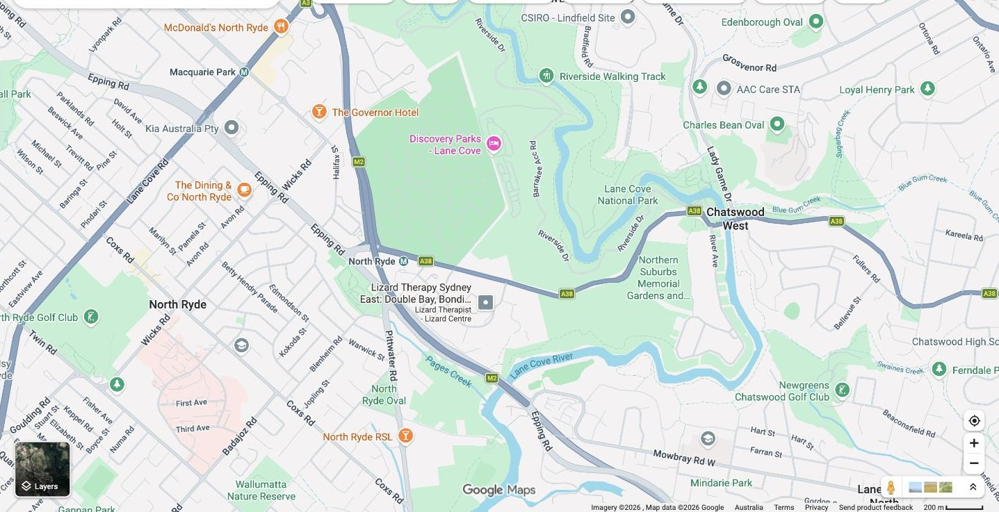

Every group got this brief before prep started. We're the Cemetery Owners, one of three parties who have to agree how the road gets fixed.

The road serves a rail car park, the Cemetery and the Park entrance. Three problems have built up along it: a bushfire-evacuation bottleneck, unregulated commuter parking, and stormwater running into the Park. No one party can fix it alone — the $2M job only happens if the three of us agree how to split it.
Privately run cemetery, entrance halfway down the hill. Our position is on the Preparation page.
Owns the road, has metered the upper section, and would fund or approve most of the public works.
Manages Lane Cove National Park at the base of the hill. Wants the road widened for bushfire evacuation, the parking controlled, and the stormwater pollution fixed.
A council-owned road runs about two-thirds of a kilometre downhill, from its junction with a main RMS road to the Lane Cove National Park entrance. A heavy rail station (Epping–Chatswood line) sits at the top on the main road, so commuters now park along the upper section. Council has metered that stretch.
Halfway down, on the left, is the public entrance to a large privately run Cemetery. The road is wide and well-maintained to that point, then narrows and deteriorates — ruts, puddles, poor drainage, no footpath. Walkers to and from the Park have to use the road itself. Some commuters park past the Cemetery, but it's unregulated and "higgledy-piggledy."
For years the Park has warned that the narrow section is too tight for two fire trucks to pass — a real risk to the Park, its campsite and visitors trying to evacuate (as happened here in the early 1990s). Commuter parking makes it worse. Stormwater run-off from the Cemetery also carries weeds, sediment and pollutants into the Park, damaging its ecology.
The Park wants to widen the road, control the parking and fix the stormwater — but it needs both the Cemetery and Council on board to do it.
| Item | Cost | Primarily benefits |
|---|---|---|
| Road widening, resurfacing, new footpath | $1.2 million | Bushfire evacuation, pedestrian safety — mainly National Park & public |
| Parking meters (lower section) | $0.3 million | Regulated commuter parking — mainly Council revenue & amenity |
| Stormwater improvements | $0.5 million | Park ecology — disputed source of pollution |
| Total | $2.0 million |
The three parties have to agree a joint, long-term fix and how to share its costs and benefits across the bushfire risk, the parking and the stormwater. No party benefits equally from all three — which is what makes the split contestable.
The two documents behind everything above.
Parties involved: Council · Privately operated Cemetery · Lane Cove National Park
A council-owned local road leads down the hill from its junction with a main RMS-owned road to the entrance of Lane Cove National Park (approximately 2/3rds km). A heavy rail station (part of the Epping Chatswood Rail Link) is located at the top of the hill, on the main RMS-owned road. This means that train commuters now use the section of the council road towards the top of the hill as a car park.
Council has installed parking meters for the upper section of the road. Halfway down the hill on the left is the public entrance road to a large, privately operated Cemetery. The council road is wide and well-maintained all the way down to the Cemetery entrance. After passing the Cemetery entrance, however, the road narrows considerably and is in poor condition, with large ruts, puddles, poor drainage, and no footpath. This means that people walking to/from the National Park have to walk in the road. Some rail commuters park downhill from the Cemetery entrance, but it is poorly regulated and "higgledy-piggledy".
For several years, the National Park has been concerned that in the event of a bushfire, there would be insufficient width on the narrow section of the council road for two fire trucks to pass. The unregulated commuter car parking exacerbates this problem. This is a substantial risk to the National Park, its caravan/campsite and any visitors who might not be able to evacuate in the event of a serious bushfire (as was experienced in the National Park in the early 1990's). To make matters worse, stormwater run-off from the Cemetery conveys weeds, sediment and other pollutants into the Park, which damages its ecology. The National Park is keen to widen the poor section of road to mitigate bushfire risk, better control parking, and address stormwater pollution. To achieve these improvements, the National Park needs cooperation from the Cemetery and Council.
| Item | Cost |
|---|---|
| Road widening/resurfacing/new footpath | $1.2 mil |
| Parking meters | $0.3 mil |
| Stormwater improvements | $0.5 mil |
| Total | $2 mil |
The parties need to agree to work together and develop a joint approach that equitably shares the costs and benefits associated with a long-term solution to the bushfire risk, unregulated parking, and stormwater pollution.
Source: four-scenarios-development-negotiation.pdf (UTS Canvas, subject 17912) — Scenario 1 only.
Source: scenario-1-lane-cove-national-park-cemetery-owners.docx — our negotiation brief, subject 17912.